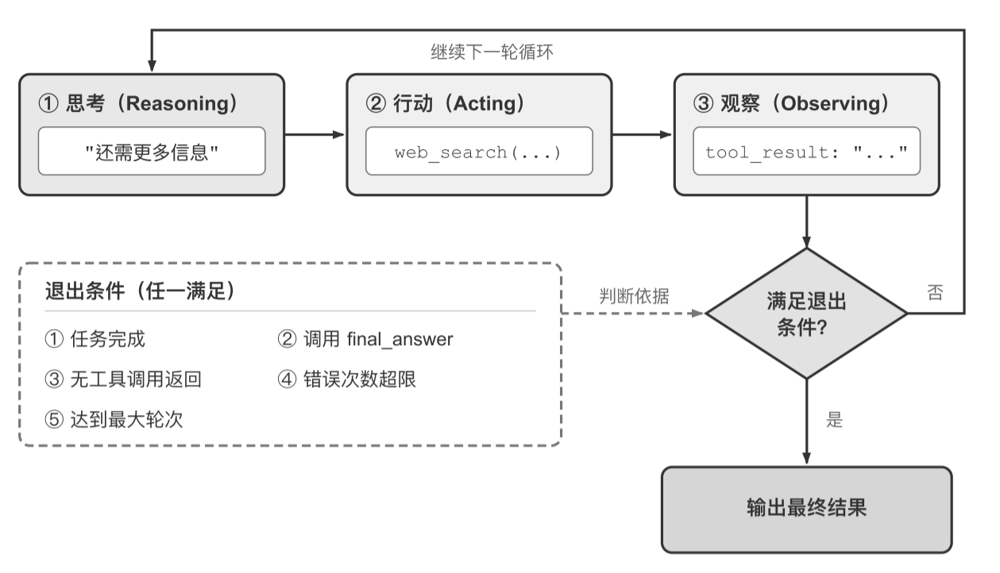
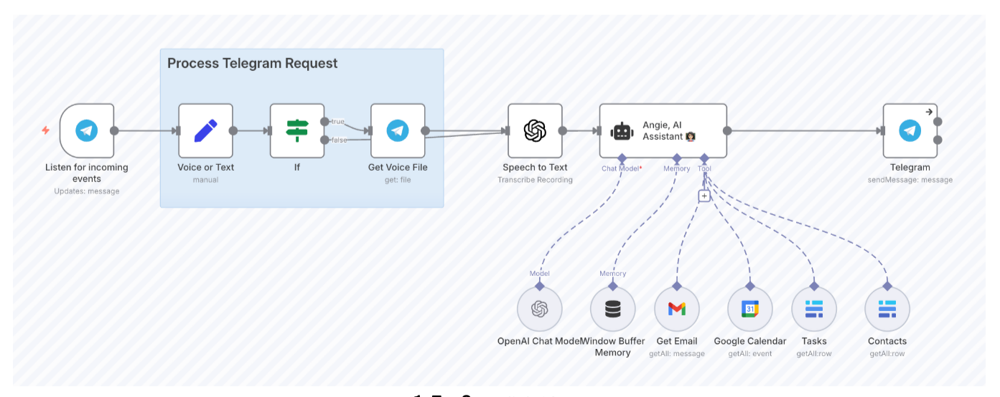

Agent 边界内、模型之外
负责中介 Model 与 Environment 的交互，但不包含被交互的环境本身。
- 工具定义、调用适配器、权限检查
- 沙箱的权限与重置机制
- 上下文管理、约束、验证与纠正的实现
1.1 建立了 Agent 的最小工程公式：Agent = LLM + 上下文 + 工具——它回答了“Agent 是什么”。本节回答下半部分：Agent 如何在生产环境中可靠运行。 把 LLM 抽象为核心组件 Model，把 Agent 边界内、模型之外的运行与治理层统称为 Harness（上下文管理 + 工具接口 + 约束 + 验证 + 纠正）。模型提供理解与推理能力， Harness 把这些能力引导、约束和放大为可靠的任务执行。
Harness 是 Agent 边界内、模型之外的运行与治理层，它负责中介 Model 与 Environment 的交互，但不包含被交互的环境本身。
Agent = Model + Harness
Harness = 上下文管理 + 工具接口 + 约束 + 验证 + 纠正
最小公式＝Demo 视角（Model + 能构造上下文、暴露工具接口的最小 Harness）；
扩展公式＝生产视角（再补上约束、验证、纠正三层工程外壳）。后者完全包含前者，并在外围加了一圈安全网。
之所以换用更通用的“Model”一词，是因为 Harness 工程的原则适用于任何具备推理和工具调用能力的模型，不限于某种特定模型类型。回到马具隐喻：没有 Harness 的模型就像脱缰的野马——能力惊人，却无法可靠地完成任务。
负责中介 Model 与 Environment 的交互，但不包含被交互的环境本身。
工具背后的对象仍属于环境，物理部署位置不决定概念归属。
| 环节 | 没有 Harness | 有了 Harness |
|---|---|---|
| 上下文 | 看不到退款政策 | 系统提示词写明 7 天退款政策 |
| 工具 | 不知道该调哪个 API | 调用 query_order 与 process_refund 完成操作 |
| 约束 | — | 校验退款金额不超过订单金额 |
| 验证 | 直接编造一个退款结果回复用户 | 校验数据库状态，确认退款成功 |
| 纠正 | 用户发现退款根本没发生 | API 调用超时则自动重试 |
| 功能 | 一句话职责 | 与上下文 / 工具的关系 |
|---|---|---|
| Context（上下文） | 为模型提供感知信息 | 核心能力 |
| Tools（工具接口） | 为模型提供观察与行动手段 | 核心能力 |
| Constrain（约束） | 设定行为边界——能做什么、不能做什么 | 围绕上下文和工具构建的安全边界 |
| Verify（验证） | 自动判断操作结果的对错 | 围绕工具执行结果构建的检查机制 |
| Correct（纠正） | 发现问题时自动修正或回退 | 围绕工具调用失败构建的恢复机制 |
上下文与工具让 Agent “能做事”——理解任务并采取行动；约束、验证与纠正让 Agent “不做错事”—— 确保上下文和工具在生产环境中可靠运转。早期框架重在上下文与工具；生产级系统的重心已经转向约束、验证与纠正。
工具本身（文件读写、命令执行、搜索）只是 Harness 的一小部分，围绕工具构建的保障机制才是核心：
行业正在从“能做事”向“可靠地做事”转变，Harness 工程因此成为 Agent 系统的核心竞争力。
回顾 AI 应用工程的发展，可以看到一条清晰的演进弧线：
第一波——通过优化输入给模型的自然语言指令，提升输出质量。
第二波——单纯优化提示词还不够，需要系统性地管理模型能看到的所有信息：系统指令、工具定义、对话历史、外部知识。
第三波——视野从“模型能看到什么”扩展到“Agent 如何组织模型运行并与环境交互”：上下文与工具接口、约束机制、验证手段、反馈循环和错误恢复。
随后——从单次运行扩展到跨轮次的持续自主运转：谁来发现下一件该做的事、何时验证、何时才算真正完成（第十章结合多 Agent 协作系统展开）。
2026 年 7 月——更高层的编排视角：把 Agent 循环、确定性程序和人工审批组织成显式的执行图，节点承担具体能力，边规定路由与依赖，结构化状态沿边传递并在关键边界处持久化。
提示 ⊂ 上下文 ⊂ Harness ⊂ Loop ⊂ Graph。每一层都在前一层基础上扩展了工程师的关注范围和影响力；当各家模型能力越来越接近、不再是决定性的差异因素时，竞争优势就转移到了模型之外的工程实践。
他们的 Coding Agent 从 52.8% 提升到 66.5%（从排行榜 30 名开外跃升至前 5）——改变的不是模型，而是 Harness：让 Agent 自动检查自己的执行结果、检测是否陷入重复循环、优化思考策略等工程手段。
Graph 工程：Josh C. Simmons 在 2026 年 7 月 4 日的文章 We Are Entering the Graph Engineering Phase 中较早明确使用这一名称；相关实践早于该名称——LangGraph、Microsoft Agent Framework 和 Google ADK 的官方文档分别称其为图编排或 graph-based workflow。
下表进一步展开五个功能的核心设计原则和在本书中的对应章节，建立从概念到实践的映射：
| 功能 | 核心原则 | 实际例子 | 详见 |
|---|---|---|---|
| 上下文 | 信息充分性：让 Agent 在每个决策点都基于足够的信息判断 | 系统提示词、知识库、Agent 状态栏、Sidecar 旁路查询 | 第二、三章 |
| 工具 | 接口清晰：工具命名直观、参数有例子、边界有说明 | MCP 工具、代码解释器、搜索工具 | 第四章 |
| 约束 | 故障安全默认值：所有能力默认关闭，必须显式开放（类似手机 App 权限管理） | Claude Code 中每个工具默认需用户授权才能执行 | 第四章 |
| 验证 | 输入隔离：安全检查只看结构化数据（如工具返回的 JSON 字段），而不是模型自由生成的文本（攻击者可能通过提示注入操纵模型输出） | Linter 检查、类型系统、工具调用结果校验 | 第五、六章 |
| 纠正 | 不暴露中间态：在确认无法恢复之前，不将半成品结果展示给用户——失败先静默重试 | 静默重试、接续生成、连续失败时回退到人工判断（熔断机制） | 第二、五章 |
上下文与工具支撑决策 → 约束预防错误 → 验证发现偏差 → 纠正闭合循环。缺少任何一环，系统都会出现可靠性缺口。
根据 Anthropic 与数十个团队合作的经验，成功的 Agent 系统遵循三个核心原则：
从最简单的方案开始，只在确实必要时才增加复杂度。
明确显示 Agent 的规划步骤、执行日志和决策轨迹。
从 Agent 视角设计接口（易理解、易使用），而非传统 API 的程序员视角。
模型是 Agent 的智能基座，选对模型往往比优化提示词更有效。由于模型迭代极快，本节不推荐具体模型版本，而是给出选择的方向。
目前 Agent 开发中最常用的两大闭源厂商。
与闭源差距在 6 个月以内，成本显著更低。
模型在基准测试中具备某种能力，≠ 承载它的产品一定允许用户调用。不同厂商对网络安全、模型蒸馏、模型提取、隐私数据和高风险操作设置不同策略边界；同一任务在聊天产品、Coding Agent 和 API 中可能得到不同结果。业务关键任务应提前准备人工接管或合规模型作为替代路径。
Agent 需要进行多步思考、工具选择等复杂决策，不带思考能力的模型在这些任务上表现往往很差。
除了成本，选模型还要看输出速度与多模态支持。
编排模式是 Harness 中“上下文与工具”层面的组织方式——它决定了上下文如何在 LLM 调用之间流动、工具如何被调度、执行路径是预先设定还是动态生成。遵循“从简单到复杂”的原则：先考虑单个 LLM 调用 → 需要多步骤时考虑工作流 → 需要动态决策时才用自主 Agent。记住：Agent 系统通常会用延迟和成本换取更好的任务性能。
通过预定义代码路径编排 LLM 和工具——每一步做什么、下一步去哪都由代码写死，LLM 只在节点内部负责理解和生成。
订机票示例（四个固定节点）：
执行路径不是预先定义的，而是 Agent 根据环境反馈实时决定——本质上就是在循环中使用工具的 LLM（ReAct）。
订机票示例（动态）：用户说“帮我订下周三去上海的机票”，Agent 自行决定先搜索航班、发现需要登录、于是先核实身份、再回来搜索、发现最便宜的航班需要转机、主动询问用户是否接受、用户拒绝、Agent 调整搜索条件……

关键的、有严格合规要求的流程用工作流确保可靠性，需要灵活决策的部分切到自主模式。例如n8n 是一个成熟的工作流自动化开源框架， 开发者通过可视化界面拖拽功能组件来构建 Agent，可以在同一个系统中同时使用工作流节点和自主 Agent 节点。

| 框架 / 平台 | 核心定位 | 编排模式 | 开发方式 | 适用场景 |
|---|---|---|---|---|
| OpenAI Agents SDK | 轻量级 Agent 开发库 | 自主（工具循环） | 代码优先 | 快速原型、单 Agent 应用 |
| Claude Agent SDK | 生产级 Agent 开发框架 | 自主（工具循环 + 子 Agent） | 代码优先 | 复杂自主任务、Coding Agent |
| LangChain / LangGraph | 通用 LLM 应用框架 | 工作流 + 自主 | 代码优先 | 复杂链式思考、多步骤工作流 |
| n8n | 可视化工作流自动化 | 工作流 + 自主 | 低代码（可视化拖拽） | 业务自动化、非技术团队 |
| Dify | LLM 应用开发平台 | 工作流 + 对话式 | 低代码 + API | 企业级 RAG、知识库应用 |
| CrewAI | 角色化多 Agent 编排 | Multi-Agent 协作 | 代码优先 | 团队式任务分解与执行 |
| OpenClaw | 开源全能个人 Agent | 自主 + 事件驱动 | 配置 + 代码（自托管） | 个人助理、Deep Research、Computer Use、多平台消息集成 |
“模型即 Agent”深化后，框架核心价值不再局限于“编排 LLM 调用”——上下文管理、工具生态、安全约束、错误恢复等 Harness 工程反而更重要。选框架的关键不在于框架本身的复杂度，而在于它能否以最小的抽象层让你专注于业务逻辑。
护栏（Guardrails）是 Harness 中“约束、验证、纠正”层面的核心实现手段——构成保障 Agent 行为安全可控的分层防线。精心设计的护栏有助于管理数据隐私风险（例如防止系统提示泄露）或声誉风险（例如确保行为与品牌一致）。可以先针对已识别的风险设置护栏，然后在发现新漏洞时逐步添加。
为降低危险请求被放行，模型可能同时拒绝一部分合法但形式敏感的任务（例如授权的安全测试、模型蒸馏研究）。因此护栏评估不能只测“应当拒绝的请求是否被拦截”，还要测“明确允许的请求是否能够正常完成”。
在请求进入系统时就进行过滤，通常包含四种机制：
核心是工具风险评级：根据操作是否可逆、权限等级、财务影响，为每个工具标注风险等级。
在结果离开 Agent 之前做最后一道把关：
分类器护栏的一个代表性实践（Anthropic 研究页），核心机制有三点：
人工干预是一个关键的保护措施——让 Agent 无法完成任务时优雅地转移控制权。客户服务中升级到人工客服；Coding Agent 中将控制权交还开发者。它在部署早期尤为重要：有助于识别失败模式、发现边缘情况、建立健壮的评估周期。
通常有两种主要情况会触发人工干预：
从 Harness 工程的视角重新审视本书的结构，可以发现每一章都在系统性地构建 Harness 的某个组件。同时，安全不是某一章的独立话题，而是贯穿全书的横切关注点（Cross-cutting Concern）——类似于日志记录需要渗透到每个模块中。
| Harness 重点 | 对应章节 | 核心内容 | 安全关注点 |
|---|---|---|---|
| 上下文设计 | 第二章（上下文工程） | 提示工程、Agent 状态栏、上下文压缩、Agent Skills | 提示注入与信息泄露 |
| 上下文扩展（知识持久化） | 第三章（知识库） | 用户记忆、RAG、结构化索引、智能化 RAG | 敏感信息暴露、隐私保护 |
| 工具设计与安全约束 | 第四章（工具设计） | 工具分类、权限控制、MCP 标准、异步架构 | 误操作、未授权访问、不可逆操作 |
| 工具的验证与纠正 | 第五章（代码生成） | Coding Agent 的 Harness、测试驱动、代码化规则 | 身份冒用、责任归属 |
| 系统级验证 | 第六章（评估） | 评估环境、数据集、自动化评估、可观测性 | — |
| 模型层面的纠正 | 第七章（后训练） | SFT、强化学习——将 Harness 中积累的反馈信号写入模型参数，可看作 Harness 工程的延伸 | 目标偏离、对齐与鲁棒性 |